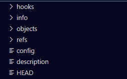

Git简明实用教程
本文最后更新于：1 年前
Git 是什么
Git（读音为/gɪt/）是一个开源的分布式版本控制系统，可以有效、高速地处理从很小到非常大的项目版本管理。（管理文件内容的版本，追踪内容的变化）
git是用于Linux内核开发的版本控制工具。与CVS、Subversion一类的集中式版本控制工具不同，它采用了分布式版本库的作法，不需要服务器端软件，就可以运作版本控制，使得源代码的发布和交流极其方便。git的速度很快，这对于诸如Linux内核这样的大项目来说自然很重要。git最为出色的是它的合并追踪（merge tracing）能力。
其组成的库目录包括：
hooks：存储钩子的文件夹logs：存储日志的文件夹refs：存储指向各个分支的指针（SHA-1标识）文件objects：存放git对象config：存放各种设置文档HEAD：指向当前所在分支的指针文件路径，一般指向refs下的某文件
Git还包括一些常用的对象形式：
tree: 对象对应于文件目录。包含文件名列表以及文件的类型比特（包含许可权）、到blob（对应于文件）或tree对象的引用。commit: 对象链接tree对象在一起而成为history，包含顶层源目录的tree对象名字、一个时间戳、log信息、0个或多个父commit对象的名字。用于保存特定版本的树型文件夹结构以及提交作者，电子邮件地址，日期和描述性提交消息。tag: 对象是一个容器，包含了到另一个对象的引用，也可以增加关于另外对象的元数据。通常它保存需要追溯的特定版本数据的一个commit对象的数字签名。
Git还有一些常用的引用类型：
heads: 引用一个本地对象，是commit的指针。每个head可以指任意一个这样的指针。可以包含任意数量的heads。而”HEAD”（全部大写），仅仅指的是当前有效的head。默认情况下，在每个仓库下都有一个head，叫做master。remotes: 引用远程repository中的一个对象meta: 例如一个bare repository中的一个配置, 用户权限; refs/meta/config名字空间等
版本控制
Git 是一个版本控制工具，因此要使用其进行版本控制首先需要建立一个版本库。
版本库
初始化版本库：
1 | |
git 会作出以下回应：
该操作创建一个空的版本库，文件夹内目录结构如下：

其中包含了 config 和 head 两个对象。
HEAD 文件的内容如下：
ref: refs/heads/master 可以看到 HEAD 文件是一个索引文件，后面的地址指向了该索引的映射。目前该映射体现的是该版本仓库默认的分支，即 matser。
向版本库中追加文件
假设项目管理文件夹包括以下部分：Program 和 Partial
依据这两个文件夹及其内容建立版本内容，使用如下命令：
1 | |
这样就向当前的版本分支中添加了两个文件夹：Program 和 Partial
如果错误添加了某个文件夹或文件需要剔除出去可以使用如下命令：
1 | |
git 会对5添加的文件或文件夹进行更改的跟踪。
可以使用纯文本文件 gitignore 来使得在向版本库添加文件时自动忽略这些文件。该文件放置在git的工作目录下，与文件夹 .git/ 同级。
该文件内容直接写入要忽略添加的规则，每行一个，支持文件名，文件夹，通配符和正则表达式。
将添加的文件提交到版本库
使用以下命令将添加的文件提交到版本库
1 | |
使用以下命令可以比较当前工作目录与版本库的差别：
1 | |
管理分支
如果项目存在多个分支就需要进行分支管理：
1 | |
使用以下命令创建分支并将创建的分支设置为当前工作分支：
1 | |
删除分支：
1 | |
查看分支列表：
1 | |
查看版本库的发展记录
查看两个版本的差异情况：
1 | |
合并其他分支到主分支上：
1 | |
如果在合并分支的过程中，有些相同的行内容不一样，会出现报错，此时就需要参照报错信息手动去解决这些问题。
逆转和恢复
项目跟踪工具的一个重要任务之一，就是使我们能够随时逆转（Undo）和恢复（Redo）某一阶段的工作。
命令形式：
1 | |
其中：
--mixed 仅是重置索引的位置，而不改变你的工作树中的任何东西（即，文件中的所有变化都会被保留，也不标记他们为待提交状态），并且提示什么内容还没有被更新了。这个是默认的选项。--soft 既不触动索引的位置，也不改变工作树中的任何内容，我们只是要求这些内容成为一份好的内容（之后才成为真正的提交内容）。这个选项使你可以将已经提交的东西重新逆转至“已更新但未提交（Updated but not Check in）”的状态。就像已经执行过 git update-index 命令，但是还没有执行 git commit 命令一样。--hard 将工作树中的内容和头索引都切换至指定的版本位置中，也就是说自
提取之前的某个文件的提交覆盖当前工作空间：
署名标签
在 git 中，有两种类型的标签，“轻标签”和“署名标签”。
技术上说，一个“轻标签”和一个分支没有任何区别，只不过我们将它放在了 .git/refs/tags/ 目录，而不是 heads 目录。
1 | |
“署名标签”是一个真正的 git 对象，它不但包含指向你想标记的状态的指针，还有一个标记名和信息，可选的 PGP 签名。你可以通过 -a 或者是 -s 选项来创建“署名标签”。
1 | |
远程仓库的建立与合并
在服务器上建立一个git远程仓库，以使其他人可以一起对该项目做 contribution：
1 | |
这样远程版本库就建立好了。
通常的情况下，合并其他的人的工作的情况会比合并自己的分支的情况要多，这在 git 中是非常容易的事情，和你运行 git-merge 命令没有什么区别。事实上，远程合并的无非就是“抓取（fetch）一个远程的版本库中的工作到一个临时的标签中”，然后再使用 git-merge 命令。
远程仓库与本地的交互
首先，我们需要建立一个远程仓库在本地的镜像：
1 | |
如果我们对这个镜像做了更改，把这些更改提交：
1 | |
如果远程仓库中也发生了更改，需要将远程仓库的更改同步到本地仓库：
1 | |
仓库之间同步时不直接合并，需要先新建一个分支，检查一下不同之处：
1 | |
当我们需要将本地提交好的分支推送到远程仓库时：
1 | |
一些注意事项
- 在第一次初始化仓库时需要指定仓库的的使用者，如名称和邮件地址等，命令如下：
1 | |
- 每次在进行版本或者分支操作时最好先进行一次提交
commit，以防止当前所做的更改丢失。 - linux与windows的换行符格式不同，在提交时为了防止被CRLF刷屏，可以执行以下命令：
1 | |
当 core.autocrlf 为 false 时需要配置：
1 | |
参考资料
本博客所有文章除特别声明外，均采用 CC BY-SA 4.0 协议 ，转载请注明出处！